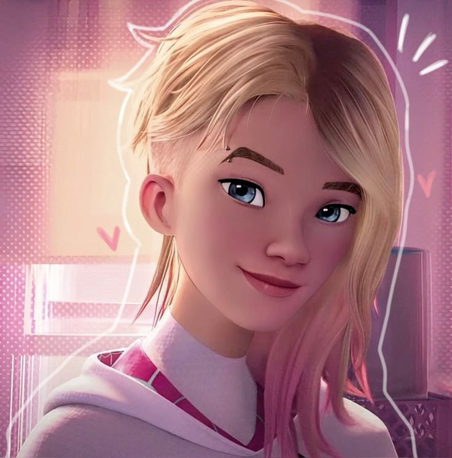
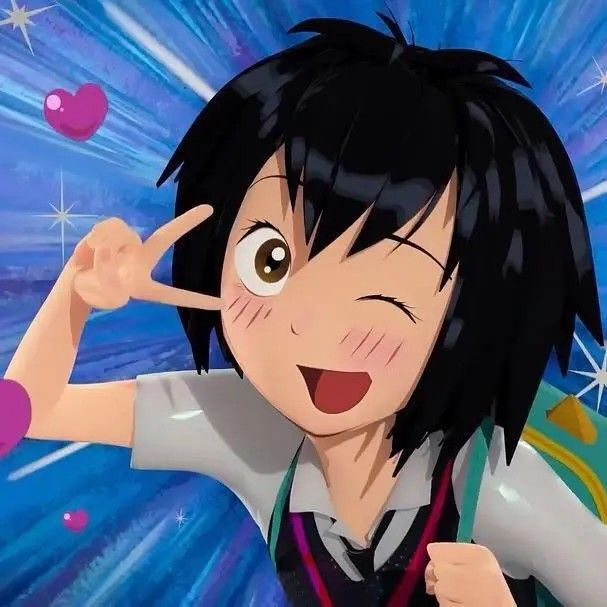
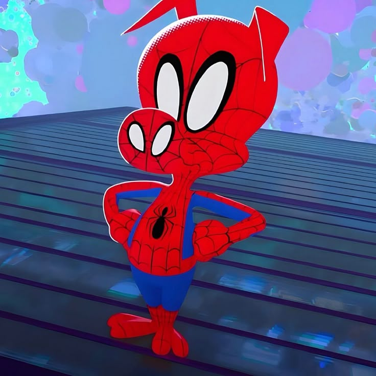
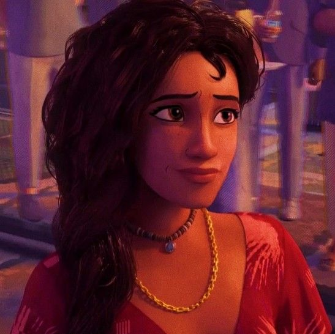
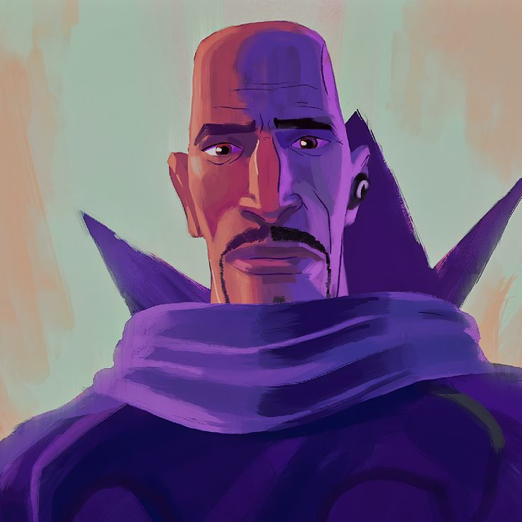
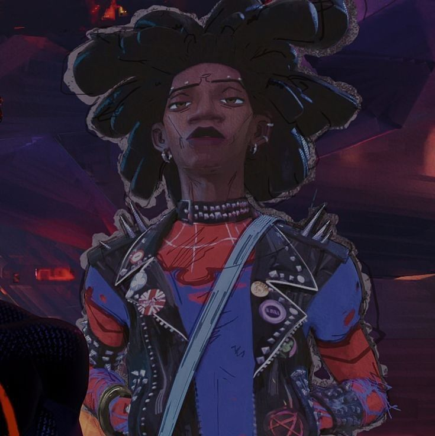
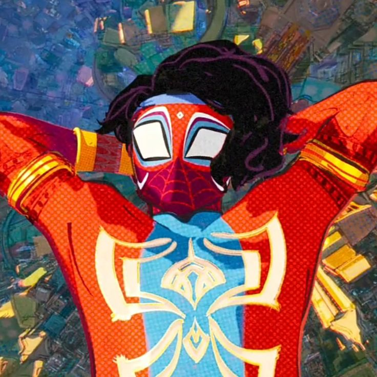
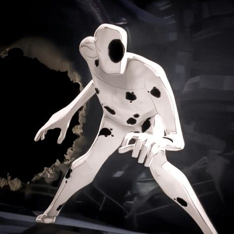

Sobre
O Aranhaverso (ou Spider-Verse, no original em inglês) é um conceito do universo do Homem-Aranha que reúne diversas versões do personagem vindas de realidades alternativas diferentes. Em vez de existir apenas um Homem-Aranha (como Peter Parker), o Aranhaverso mostra que existem inúmeros "Homens-Aranha", "Mulheres-Aranha" e até versões bem inusitadas (como o Porco-Aranha, robôs, e muito mais), cada um com suas características e histórias próprias.
Fonte: AdoroCinema
A saga Aranhaverso é elogiada pela sua inovação visual, animação de alta qualidade e a forma como explora o conceito do Multiverso e as diferentes versões do Homem-Aranha. Os filmes também são apreciados pela sua narrativa complexa e pela exploração de temas como identidade, responsabilidade e a busca por propósito.


Filmes
Homem-Aranha no Aranhaverso
Em Homem-Aranha no Aranhaverso, Miles Morales é um jovem negro do Brooklyn que se tornou o Homem-Aranha inspirado no legado de Peter Parker, já falecido. Entretanto, ao visitar o túmulo de seu ídolo em uma noite chuvosa, ele é surpreendido com a presença do próprio Peter, vestindo o traje do herói aracnídeo sob um sobretudo. A surpresa fica ainda maior quando Miles descobre que ele veio de uma dimensão paralela, assim como outras versões do Homem-Aranha.
Fonte: AdoroCinema
Saiba MaisHomem-Aranha Através do Aranhaverso
Homem-Aranha: Através do Aranhaverso, é a continuação do vencedor do Oscar Homem-Aranha: No Aranhaverso, de 2018, que acompanha Miles Morales (Shameik Moore), o simpático Homem-Aranha do Brooklyn. Neste novo capítulo, Miles está de volta para uma nova missão em sua agitada vida como super herói. No novo filme, Morales é transportado para uma aventura épica através do multiverso, e deve unir forças com a mulher-aranha Gwen Stacy (Hailee Steinfeld) e um novo time de Pessoas-Aranha, formado por heróis de diversas dimensões. No entanto, tudo muda quando os heróis entram em conflito sobre como lidar com uma nova ameaça, e Miles se vê em um impasse. E para piorar ainda mais a situação, eles precisam enfrentar um vilão muito mais poderoso do que qualquer coisa que já tenham encontrado antes. Agora, para salvar as pessoas que ele mais ama no mundo, Miles deve redefinir o que significa ser um super herói.
Fonte: AdoroCinema
Saiba MaisHomem-Aranha Além do Aranhaverso
Originalmente agendado para março de 2024, Homem-Aranha: Além do Aranhaverso estreia agora em 3 de junho de 2027. As primeiras imagens do filme também foram divulgados, assim como um teaser que foi exclusivo do evento.
Fonte: Omelete
Saiba MaisPersonagens
Miles Morales

Gwen Stacy
Peter Parker

Peni Parker
Aranha Noir

Porco-Aranha
Jefferson Davis

Rio Morales
Aaron Davis
Rei do crime

Miguel O'Hara

Jessica Drew

Hobie Brown
Pavitr Prabhakar
O Mancha
Miles Morales (Terra 42)